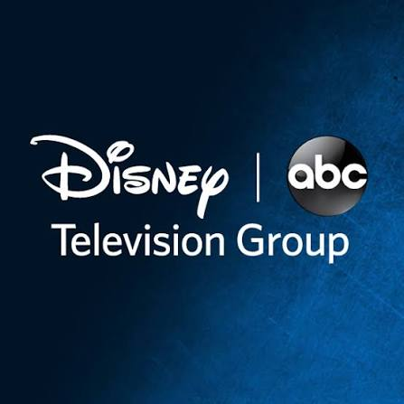

26 years of progressive leadership in technology, from hands-on engineering to executive roles managing enterprise scale.

8 Microsoft Certifications (1999-2002) covering Visual Basic, SQL Server, Windows Architecture, and Enterprise Solutions Architecture
Oracle Certified Professional (OCP) in Database Administration Track with expertise in Oracle Database Architecture and SQL/PL-SQL
10+ Advanced Professional Certifications | 26+ years of industry expertise | Continuous learning and technical excellence
Looking for technical leadership, architecture expertise, or strategic guidance? Let's connect.